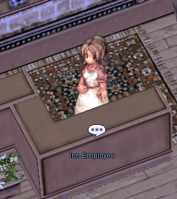
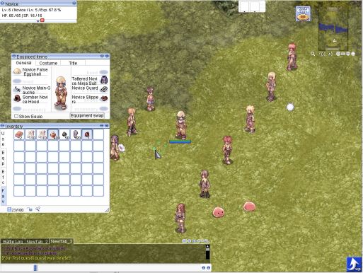

Improvements to Overall Well-Being¶
At World of Your Dream, we are dedicated to providing the ultimate gaming experience for our players.
One of our top priorities is to actively listen to player feedback and use it to improve the game.
We are constantly working to add new features and improvements that will enhance the gameplay and make it even more enjoyable for everyone.
From new game modes to updates to existing content, we are committed to making World of Your Dream a truly immersive and satisfying experience for all players.
Contents¶
- Natural HP/SP Recovery is Increased
- Superior Inns
2.1 For 7,000 Zeny You Will Get:
2.2 Currently, Inns Are Available in the Following Towns: - Retailers of Uniform Equipment
- Remastered Novice Location
Natural HP/SP Recovery is Increased¶

When a player is idle or not engaged in combat and has not been hit by a mob, they will experience a significant increase in HP and SP regeneration.
When a player sits, they will regain 3% of their maximum HP and SP every 1.5 seconds.
The regeneration is based on a fixed percentage, rather than a fixed value, so it will always take approximately 1 minute to fully regenerate from 0%.
Restrictions:
¶
- When the character is overweight, recovery does not work.
- Delay after using Asura Strike is 5 minutes.
- All other restrictions also apply to increased recovery.
Superior Inns¶
In the World of Your Dream, inns are a staple feature in the game and serve as a vital location for players to rest and recover their health and mana points.
These inns provide a safe haven for players to recuperate and prepare for their next adventure.
However, in uaRO, we have taken the concept of inns to the next level by incorporating a variety of additional features that enhance the player's experience.
Overall, the inns in uaRO are designed to provide players with a comprehensive and enjoyable gaming experience, making it an essential aspect of the game.
For 7,000 Zeny You Will Get:¶
- Full HP/SP heal.
- Blessing and Increase Agi for 10 minutes.

Currently, Inns Are Available in the Following Towns:¶
- Prontera
- Alberta
- Geffen
- Payon
- Morroc
- Aldebaran
- Rachel
- Lighthalzen
- Hugel
- Veins
- Amatsu
- Lutie
- Yuno
- Gonryun
- Ayothaya
Retailers of Uniform Equipment¶
Each town in the game has at least one prominent retailer of tools and equipment, who offers a wide range of items that players may use during their gameplay.
These items include arrows of various types such as Iron Arrows, Silver Arrows, Fire Arrows, and Traps, which are no longer exclusive to specific locations.
Additionally, items such as Berserk Potions, Yggdrasil Leaf, and Blue Gemstones are also readily available at these retailers, making it convenient for players to obtain them as they progress through the game.
Tool dealer in Prontera Inn
Remastered Novice Location¶
Our server features a training ground that has been specifically designed to utilize the latest and most advanced renewal mechanics, providing players with a more efficient and streamlined leveling experience.
The Renewal Training Grounds offer the same immersive and engaging gameplay experience as the pre-renewal version, but with the added convenience of not requiring players to allocate stat points initially.
This allows new players to focus on honing their skills and mastering the game's mechanics, without the added stress of having to make complex decisions about character development.
Furthermore, completing the various quests provided by the Job NPCs in the Renewal Training Grounds can provide new players with valuable supplies and EXP, if they are willing to invest a small amount of time and effort into the process.
This is a great way for new players to quickly and easily advance their characters and gain a deeper understanding of the game's mechanics and systems.

Renewal Training Ground